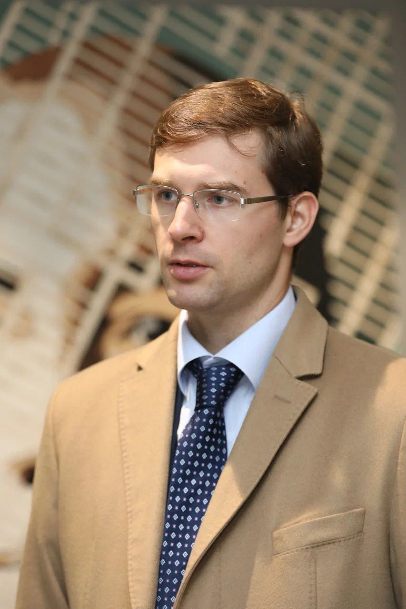

Тимур Турлов баллотируется в президенты FIDE: на Олимпиаде в Самарканде он представил свою программу
46-я шахматная Олимпиада проходит в Самарканде, а выборы президента FIDE назначены на 26 сентября. Тимур Турлов идёт в паре с Вишванатаном Анандом и представил программу, сосредоточенную на образовании, технологиях и стабильности календаря.

46-я шахматная Олимпиада проходит в Самарканде (Узбекистан) с 15 по 27 сентября. В рамках этого же события состоятся и выборы президента FIDE.
Выборы президента FIDE проходят 26 сентября на Генеральной ассамблее FIDE. Каждая федерация-член имеет один голос; в FIDE входит около 200 федераций-членов.
Три президентские пары
На пост президента претендуют три пары:
- Тимур Турлов (президент) + Вишванатан Ананд (вице-президент)
- Вадим Розенштейн (президент) + Гордон Танг (вице-президент)
- Ян Хенрик Бюттнер (президент) + Малкольм Пейн (вице-президент)
Действующий президент Аркадий Дворкович возглавляет FIDE с 2018 года.
Кто такой Тимур Турлов?
Тимур Турлов — основатель и генеральный директор Freedom Holding Corp и глава Федерации шахмат Казахстана. В его корпорации работают более 10 000 сотрудников; у Турлова шестеро детей.
Я научился играть в шахматы в детстве; меня научил дедушка.
— Тимур Турлов, кандидат в президенты FIDE, глава Федерации шахмат Казахстана (The Times of Central Asia)
Программа Турлова
В своей программе Турлов заявил следующие обязательства:
- Образование: шахматы введены в 1 500 школах Казахстана, цель — 2 500 в следующем году
- Управление и технологии: внедрение CRM-систем Salesforce, цифрового FIDE ID и систем управления обучением
- Стабильность календаря: создание предсказуемого расписания турниров, как в профессиональном теннисе
- Медиа и спонсорство: усиление освещения и спонсорства через крупные компании (в качестве примера масштаба он назвал Alibaba, Citibank и Tencent)
- Доступность: расширение шахмат в недостаточно охваченные регионы (Африка, Латинская Америка); увеличение участия женщин и молодёжи
Шахматы не обязаны быть нишевым соревновательным видом спорта. Они учат терпению, самодисциплине.
— Тимур Турлов, кандидат в президенты FIDE, глава Федерации шахмат Казахстана (The Times of Central Asia)
В цифрах
- 46-я шахматная Олимпиада: Самарканд, 15–27 сентября 2026
- Выборы президента FIDE: 26 сентября 2026, на Генеральной ассамблее
- Президентские пары: 3
- Федерации-члены: около 200; по одному голосу
- Школы с шахматами (Казахстан): 1 500 → 2 500 (цель)
- Сотрудники Freedom Holding Corp: более 10 000
- Дворкович как президент FIDE: с 2018 года
Почему это важно
Выборы проходят в Узбекистане, в рамках Самаркандской шахматной Олимпиады. Выбор между тремя парами определит направление управления FIDE; программа Турлова делает акцент на образовании, технологиях и стабильности календаря.